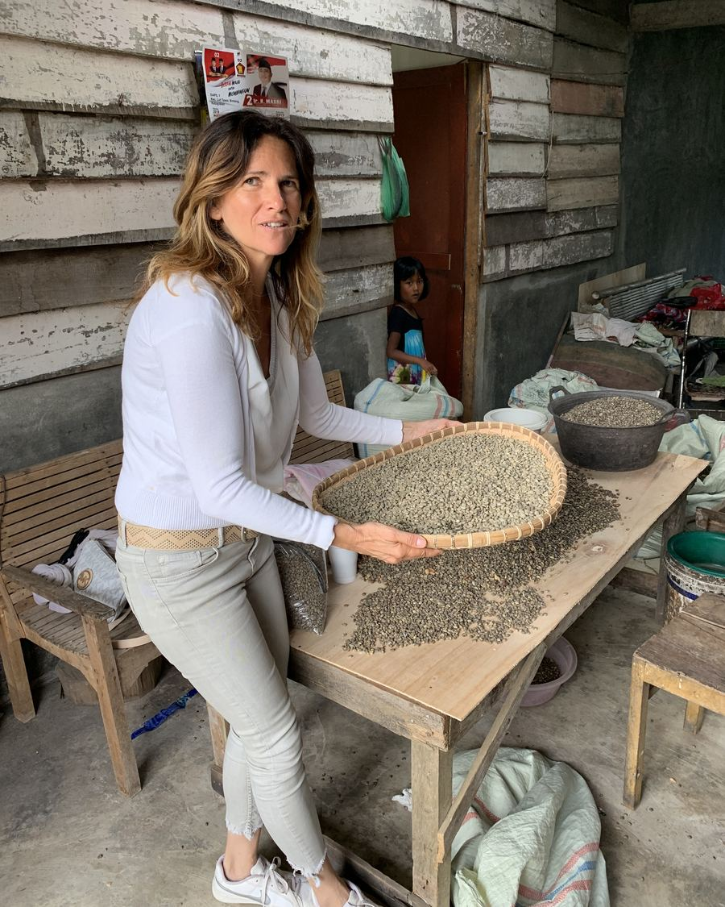

Chaque phase de notre processus est contrôlée par un artisan dont la connaissance du café et de son terroir a été transmise de génération en génération.
Nos agriculteurs, nos transformateurs, maîtrisent ces savoirs ancestraux très complexes ; leurs compétences et leur compréhension de la nature ne peuvent s'acquérir qu'au fil de longues années d'expérience.
Cette maîtrise et cette connaissance ancestrales du processus rendent le café True Luwak encore plus authentique.
La richesse de ce savoir séculaire se retrouve dans le goût de notre café.
Aucun autre café Luwak ne possède une traçabilité aussi exigeante que la nôtre.
Nous sommes les seuls à utiliser un processus aussi rigoureux : chaque fève est certifiée sauvage de la plus grande qualité.
Cette traçabilité commence à l'heure exacte et sur le lieu précis où s'est effectuée la collecte.
Nous sommes responsables de cette qualité qui doit rester inégalée.
Nous sommes les garants de la durabilité et du traitement respectueux des animaux qui contribuent à l'excellence de notre café.
Une combinaison d'exigences unique, pour un café unique.
